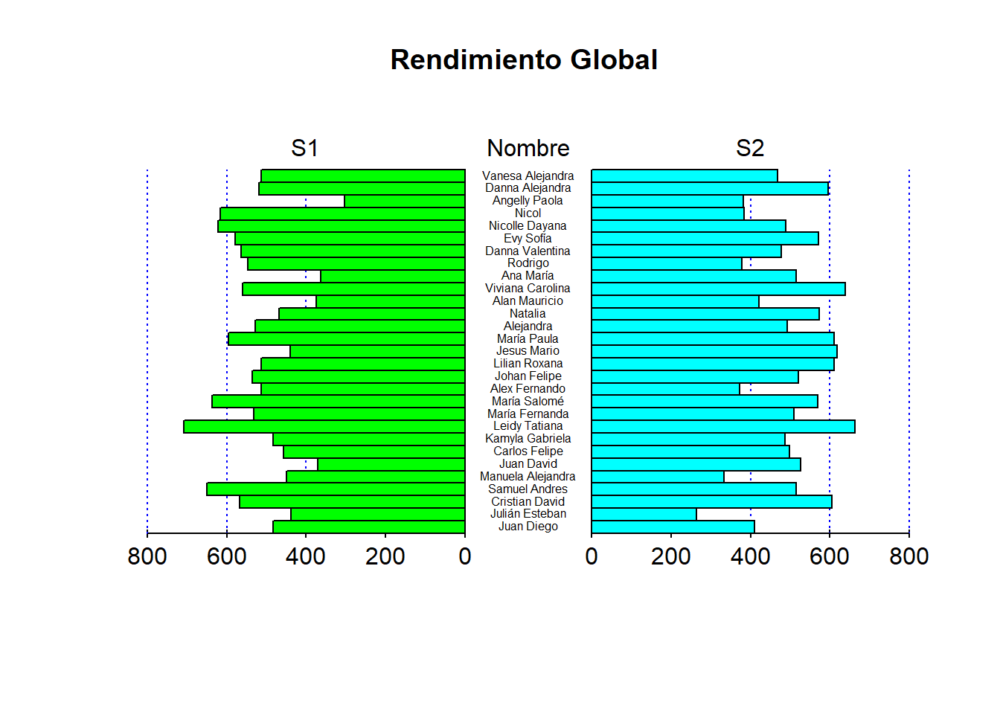
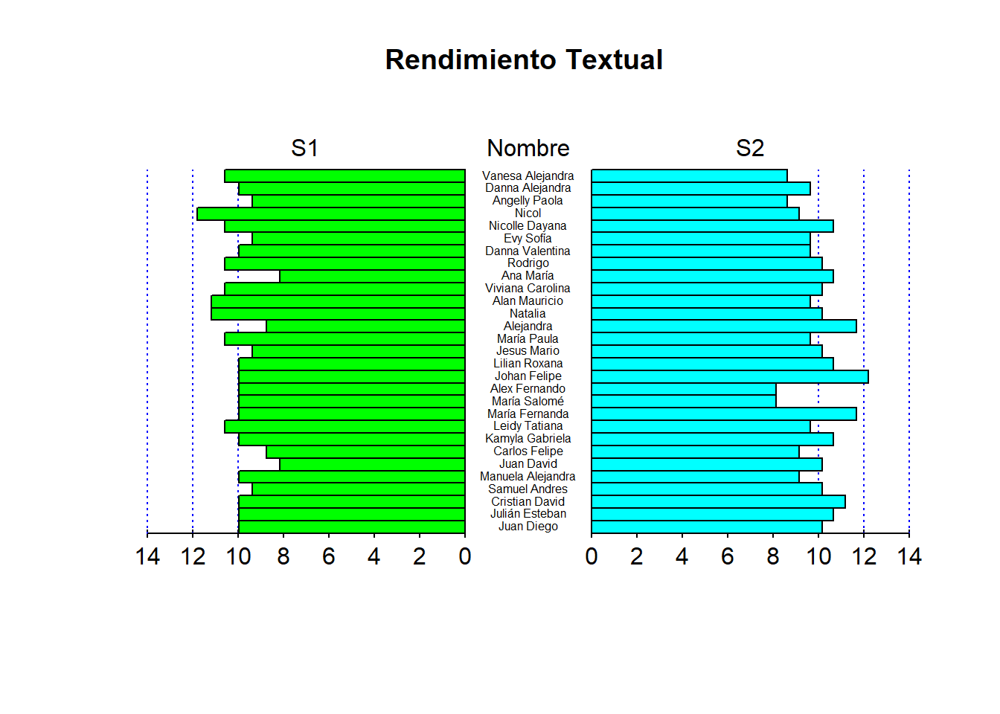
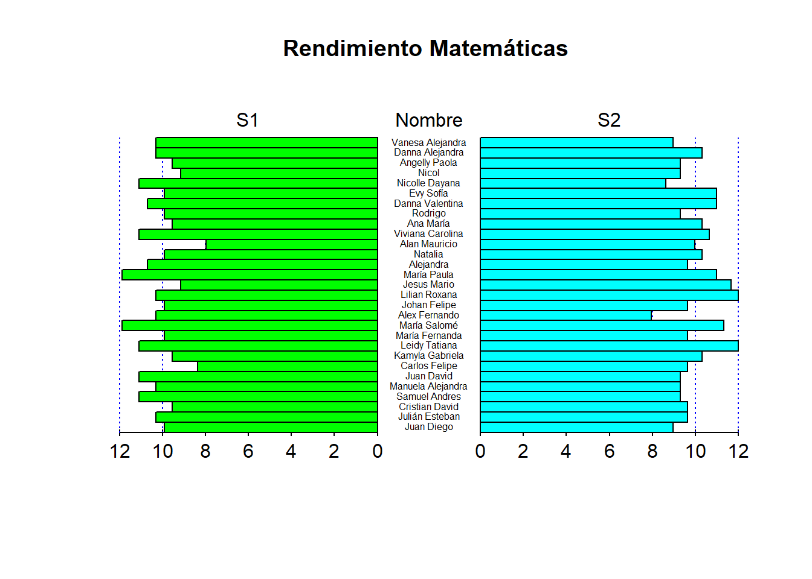
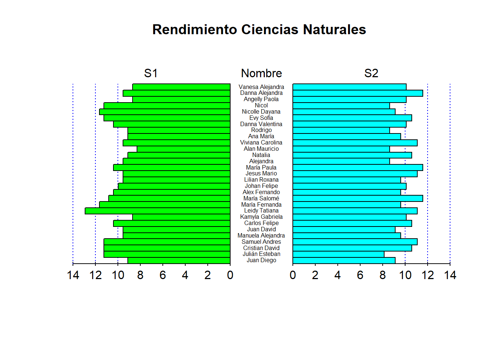
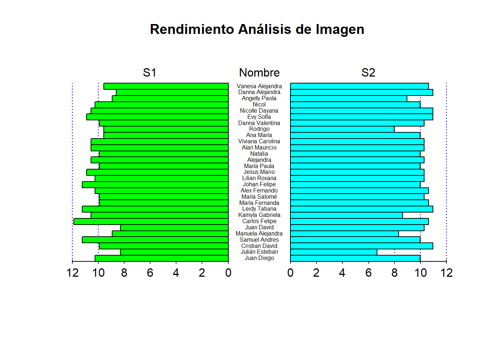

Simulacros
Primer Simulacro
Resultados por áreas
Vemos que el área a la que le fue mejor en este primer simulacro fue análisis de imagen y la que le fue mal es Ciencias Naturales.
Puntaje Global Primer Simulacro
Se muestra la distribución del puntaje global, vemos que tiende un poco a derecha es decir que los puntajes en su mayoria estan por encima del promedio estandar.
Segundo Simulacro
Resultados por áreas
Vemos que el área a la que le fue mejor en este Segundo simulacro fue análisis de imagen y la que le fue mal es Matematicas.
Puntaje Global Segundo Simulacro
Se muestra la distribución del puntaje global, vemos que tiende un poco a derecha es decir que los puntajes en su mayoria estan por encima del promedio estandar.
Comparación por áreas
Textual
Textual tuvo una mejora en el segundo simulacro.
Matemáticas
Matemáticas vemos que en el segundo simulacro hubo una caida de puntajes, lo cual afecto su rendimiento.
Ciencias Naturales
Ciencias naturales tuvo una mejora en el segundo simulacro.
Análisis de Imagen
Análisis de imagen se mantuvo en los dos simulacros.
Resultados globales de los simulacros
Vemos que en general en los dos simulacros se mantuvieron los puntajes, es decir que no hay un mejora.
Rendimiento del mochuelx
Se presenta la comparación individual de cada mochuelx en las diferentes áreas y su puntaje global.
Puntaje global

Textual

Matemáticas

Ciencias Naturales

Análisis de Imagen
